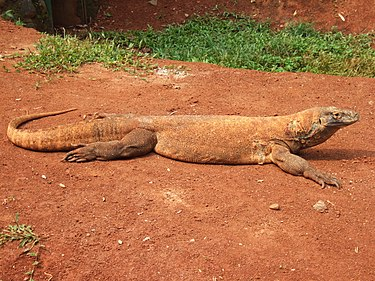
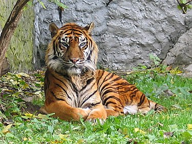
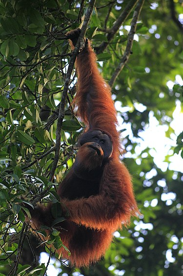
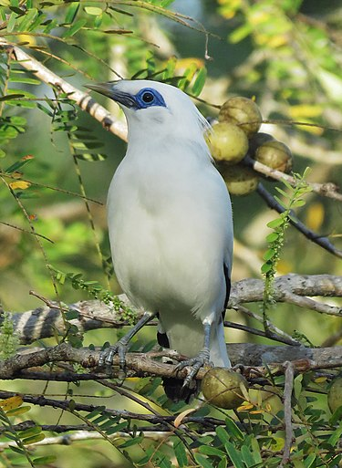
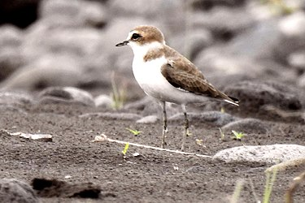

| Nama |
Foto |
Tentang |
| Komodo |
 |
Komodo atau lengkapnya biawak komodo (Varanus komodoensis), adalah spesies biawak besar yang terdapat di Pulau Komodo, Rinca, Flores, Gili Motang, dan Gili Dasami di Provinsi Nusa Tenggara Timur, Indonesia.
Hewan ini oleh penduduk asli pulau Komodo juga disebut dengan nama setempat ora.
Nama lain dari komodo adalah buaya darat, walaupun komodo bukanlah spesies buaya.
Komodo merupakan spesies terbesar dari familia Varanidae, sekaligus kadal terbesar di dunia, dengan rata-rata panjang 2-3 meter dan beratnya bisa mencapai 100 kg. |
| Harimau Sumatra |
 |
Harimau sumatra adalah populasi Panthera tigris sondaica yang mendiami pulau Sumatra, Indonesia dan satu-satunya anggota subspesies harimau sunda yang masih bertahan hidup hingga saat ini.
Ia termasuk dalam klasifikasi satwa kritis yang terancam punah (critically endangered) dalam daftar merah spesies terancam yang dirilis Lembaga Konservasi Dunia IUCN.
Populasi liar diperkirakan antara 400-500 ekor, terutama hidup di Pegunungan Bukit Barisan jama sejarah taman-taman nasional di Sumatra jaman pra-sejarah. |
| Orang Utan Sumatra |
 |
Orangutan sumatra (Pongo abelli) adalah spesies orangutan terlangka. Orangutan sumatra hidup dan endemik di Sumatra, sebuah pulau yang terletak di Indonesia. Tubuh mereka lebih kecil daripada orangutan kalimantan.
Orangutan sumatra memiliki tinggi sekitar 4,6 kaki dan berat 200 pon. Hewan betina berukuran lebih kecil, dengan tinggi 3 kaki dan berat 100 pon. |
| Jalak Bali |
 |
Jalak Bali (Leucopsar rothschildi) adalah sejenis burung pengicau berukuran sedang, dengan panjang lebih kurang 25 cm, dari suku Sturnidae. Ia turut dikenali sebagai Curik Ketimbang Jalak.
Jalak Bali hanya ditemukan di hutan bagian barat Pulau Bali dan merupakan hewan endemik Indonesia. Burung ini juga merupakan satu-satunya spesies endemik Bali dan pada tahun 1991 dinobatkan sebagai lambang fauna Provinsi Bali.
Jalak Bali ditemukan pertama kali pada tahun 1910. Nama ilmiah Jalak Bali dinamakan menurut pakar hewan berkebangsaan Inggris, Walter Rothschild, sebagai orang pertama yang mendeskripsikan spesies ini ke dunia pengetahuan pada tahun 1912. |
| Cerek Jawa |
 |
Cerek jawa (Charadrius javanicus) adalah sejenis burung perandai atau burung pantai yang berukuran relatif kecil. Semula diduga merupakan burung endemik Pulau Jawa, kini diketahui bahwa cerek jawa menyebar luas di banyak wilayah pesisir di Indonesia.
Sangat mirip dengan kerabatnya, cerek tilil (C. alexandrinus), status taksonomi cerek jawa hingga kini masih diperdebatkan. |
| Cendrawasih |
 |
Burung Cenderawasih adalah anggota famili Paradisaeidae dari ordo Passeriformes. Cenderawasih biasanya ditemukan di Indonesia seperti di bagian Timur Papua, Papua Nugini, pulau-pulau selat Torres, dan Australia timur.
Burung anggota keluarga ini dikenal karena bulu burung jantan pada banyak jenisnya, terutama bulu yang sangat memanjang dan rumit yang tumbuh dari paruh, sayap atau kepalanya.
Ukuran burung Cenderawasih mulai dari Cenderawasih raja pada 50 gram dan 15 cm hingga Cenderawasih paruh-sabit Hitam pada 110 cm dan Cenderawasih manukod jambul-bergulung pada 430 gram. |